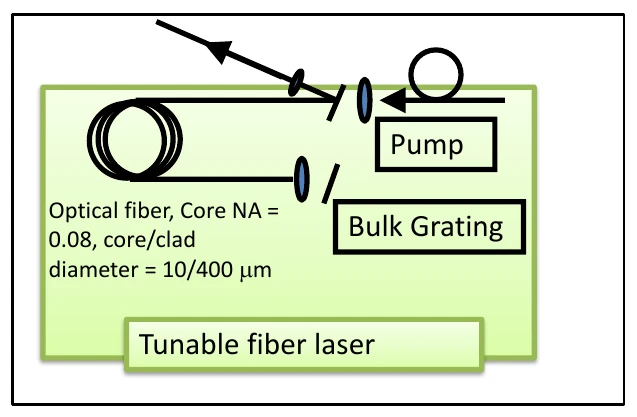
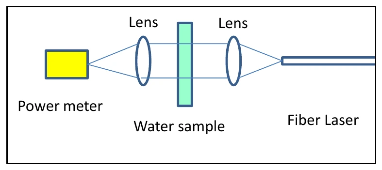

Research Proposal / Optical Systems
Laser Propulsion Research
Before studying laser-driven propulsion, we needed a way to control the light and measure how water absorbs it. This proposal lays out that experimental path.
- Proposed tuning range
- 1475-1525 nm
- Target continuous output
- ~1 W
- Proposed pump wavelength
- ~940 nm
- Research sequence
- 3 stages
01 / overview
Build the experiment in steps.
I contributed to a student research team investigating a ground-based laser approach to small-satellite propulsion, supervised by Dr. Vikas Sudesh. The immediate challenge was a laboratory system: a tunable ytterbium-erbium co-doped fiber laser and an experiment to measure water absorption.
The proposal separates the work into three stages: develop the laser, characterize wavelength-dependent absorption, and then investigate momentum transfer. Keeping these stages separate gives each one a measurable question before moving to the next.
The values shown here are design targets. The supplied proposal does not establish achieved laser output, measured thrust, or a working satellite propulsion system.
02 / laser design
A tunable source around 1500 nm.
The proposed resonator uses ytterbium-erbium co-doped fiber, a pump near 940 nm, and feedback from the fiber end and a reflector. A grating-based tuning arrangement would select wavelengths across the intended 1475-1525 nm range.
The plan also considers 3D-printed optical mounts and Python-based grating control. These are integration tasks as much as optical ones: the alignment, mounting, and control approach must work together to produce repeatable measurements.


03 / measurement
Measure the interaction before claiming propulsion.
The next experiment would compare transmitted laser power with and without a water sample. Repeating the measurement across wavelengths would show how strongly the sample absorbs the light.
The proposed setup uses lenses, a sample cell, and a power meter. A useful result depends on controlled sample length and alignment, stable input power, and a consistent reference measurement, not just a single reading.
The final research stage would investigate whether that deposited energy can produce measurable momentum transfer. The document proposes that investigation; it does not report a propulsion demonstration.


04 / takeaways
Turn a large idea into testable questions.
The value of this project was in connecting the propulsion motivation to an experiment that could actually answer a narrower question. Laser tuning, mechanical alignment, absorption measurements, and force measurements each need their own verification.
The next evidence would be a measured output spectrum and power curve, followed by repeatable absorption data. Only then would it make sense to evaluate momentum transfer against a defined baseline.